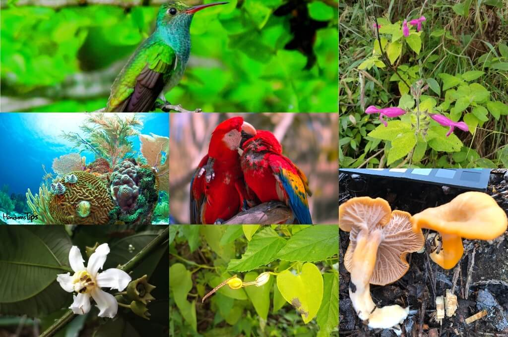
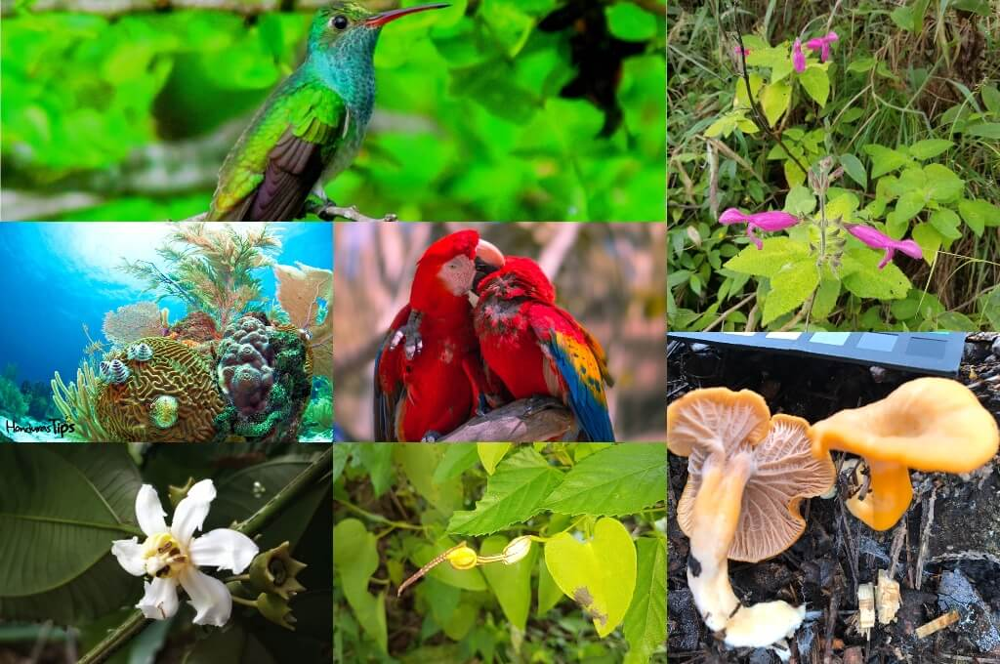

Fauna: se refiere al conjunto de animales en sus diferentes clasificaciones, como mamíferos, reptiles, aves, etc., El objetivo del estudio de la fauna con planificación territorial se orienta más que todo hacia las especies en las que conforman poblaciones estables e integradas en comunidades también estables sin incluir los animales doméstico.
La diversidad de la fauna depende de la capa vegetal, de la presencia de otros animales, de la existencia de fuentes de agua, de factores topográficos y fisiológicos y de la acción del hombre entre otros aspectos.

 

Los animales grandes no son muy numerosos pero hay cientos de especies de reptiles, anfibios y pájaros; lagartos y muchas variedades de peces en las corrientes. Monos, murciélagos y miríadas de pájaros abundan en los árboles.